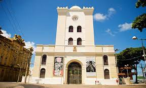

Construções antigas
Torre Malakoff
Localizada na Praça Arsenal, é um ícone arquitetônico importante. A torre foi construída em 1855 e serviu originalmente como observatório astronômico e meteorológico. Atualmente, é um espaço cultural que abriga exposições, eventos e manifestações artísticas.
Casa da Cultura

Originalmente uma prisão do século XIX, é uma construção imponente que foi transformada em um espaço cultural e de artesanato. Oferece uma variedade de artigos produzidos por artesãos locais e é um ponto de referência para a cultura pernambucana. Esses locais são exemplos notáveis da arquitetura e da história da cidade, proporcionando uma visão rica da herança cultural de Recife.